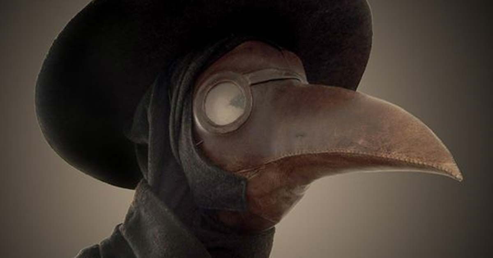
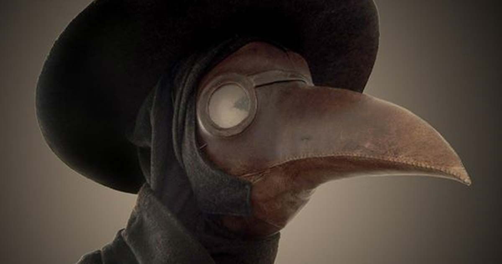

Perfect your style
A good uniform should not only be functional, but stylish. One must be both easily recognizable and put their patient at ease. All the while it should still be able to block out any pestilence and have a nice beak to fill with nice smelling herbs. Here are a few of my favourite masks and robes.

 
